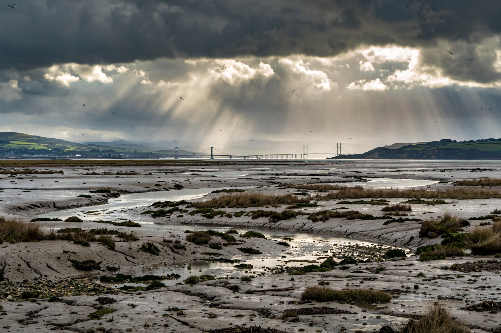

The Bristol Channel is a major inlet in the island of Great Britain, separating South Wales from Devon and Somerset in South West England. It extends from the River Severn estuary to the Celtic Sea.

Ports include Bristol/Avonmouth, Cardiff, Newport, Swansea. Islands Lundy, Flat Holm, Steep Holm. Famous for Severn Bore and huge tidal range, proposed Severn Barrage for tidal power.
1947 flooding, shipping, and shipwrecks. See River Severn, Severn Estuary.